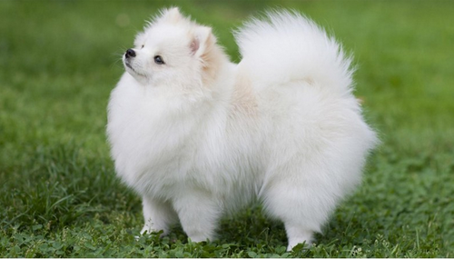
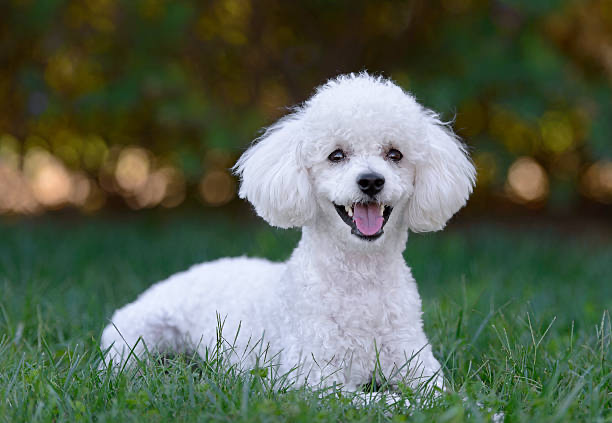

My Blog --- Dog

Click me
Pomeranian are categorized as a toy dog group because they were small in size. They are smart, curious, and
energetic.

Click me
Poodle was named after splashing in the water because they were originally known as water dog. They are
intelligent, obiedient, and timid.
 Click me
Click me
Shih tzu are categorized in the toy dog group. They are quick to mature. They reach adult size by about 10
month.